Part C: Data structures: AVL trees (40 points)
Introduction
In this section, we are going to implement a non-trivial data structure called an "AVL tree". The name "AVL" comes from the inventors of the data structure, the Russian computer scientists G. M. Adelson-Velsky (AV) and E. M. Landis (L), who published a paper on it in 1962. An AVL tree is technically a "self-balancing binary search tree", and it was the first such data structure to be invented. Others, such as red-black trees, 2-3 trees, B-trees, etc. came along later.
Before we get into the details of this data structure, let's explain why such a thing is desirable. Many practical applications of interest require set-like or map-like collections of values which have (at least!) the following requirements:
-
You have to be able to find a particular value in the collection as quickly as possible (or report that it isn't there).
-
You have to be able to add a new value to the collection as quickly as possible.
-
The collection mustn't duplicate the values searched over.
The difference between a set and a map is that sets are just the values in the collection, while maps have an associated value for each "key" value in the map. Our AVL trees will implement sets of integers, which is about as simple as it gets.
If we didn't care about efficiency, we could easily implement a set of integers using a list of integers. To find whether a particular integer is in the set, we just have to search through the list. This is a \(\Theta(N)\) operation, where \(N\) is the length of the list, so it's rather slow. To add a value to the list (making sure there are no duplicates), we can just search for the value in the list; if it's found, there is no need to add it, and if not, we can add it to the front of the list. This is also \(\Theta(N)\) . (If we don't mind repeated elements, we can just add it to the front of the list without searching, which is \(\Theta(1)\).)
Somewhere along the line, someone realized that if we arranged the data in a binary tree-like data structure, we can potentially get much faster searches (\(\Theta(log\ N)\) instead of \(\Theta(N)\)) and also get \(\Theta(log\ N)\) insertions. To do this, we create nodes containing three things: a data value, a left subtree, and a right subtree. A subtree can be a leaf (no data) or another node. In OCaml, such a data structure would look like this:
(* Assume we are storing only integers in the tree. *)
type tree =
| Leaf
| Node of int * tree * tree (* data value, left subtree, right subtree *)
We further stipulate that all the values in the left subtree of a node are strictly less than the value at the node, and all the values in the right subtree are strictly greater than the value at the node (this makes the tree an ordered binary tree). Clearly, this will only work if the values stored in the tree are orderable (like integers). This also implies that the tree has no duplicate values.
Searching through a tree like this is easy (you'll write the code below). Insertion is also easy: you simply walk down the tree until you reach a leaf where the new value ought to go, and then replace the leaf with a node whose two subtrees are leaves. If the tree is roughly balanced (the left and right subtrees of all nodes are about the same size), then looking up a value in the tree or inserting a value into the tree is \(\Theta(log\ N)\), where N is the number of values stored in the tree. That's because on average, going to a left or right subtree of a node gets rid of about half of the values in the tree, and after \(log_2(N)\) divisions by two you will end up at a leaf.
Unfortunately, if you insert elements into the tree naively (i.e. according to the simple rule given above), you can easily end up with an unbalanced tree, where some branches of the tree are empty and others have large numbers of nodes. In the worst case, the tree will only have nodes on one side (left or right) and then it's no better than a linked list. There needs to be some way to make sure that the tree stays balanced when you add new values to it. If you can guarantee that the tree stays balanced, you can guarantee that searching for values in the tree and adding new values to the tree are \(\Theta(log\ N)\) operations, which is acceptably fast for many applications.
The idea that Adelson-Velsky and Landis had was to store additional data in each node representing the "depth" of the tree. The depth of the tree is defined as follows:
AVL tree depth
- A leaf has depth 0.
- A node has depth one more than the maximum depth of its subtrees (left and right).
In addtion, they specified that an AVL tree has to obey a particular rule (also known as an invariant):
AVL tree invariant
Every node's subtrees' depths must differ by no more than 1.
So if a particular node has a left subtree with depth 3 and a right subtree with depth 2, 3, or 4, it's OK, but a smaller or larger depth in the right subtree is not allowed, because that would mean that the tree was unbalanced. The way that AVL trees preserve balance when adding new values is to first add the new value naively and then rebalance the tree (if necessary) by doing "rotations" on parts of the tree. These rotations move the tree nodes around in particular ways so as to make sure that the tree is balanced and is still an ordered binary tree.
OK, so let's look at the actual definition of the AVL tree:
This is the same as the definition given above, except that there is an extra
int value stored at each node representing the depth of the node. Note that
the first int value in the node is the depth and the second one is the
integer value being stored at the node. (Don't confuse them!) After that
comes the left and right subtrees of the node, which can be Leaf nodes or
not.
To reiterate what we said informally above: an AVL tree must satisfy the following conditions:
-
A node's value must be strictly larger than any value stored in its left subtree and strictly smaller than any value stored in its right subtree. (This is the order invariant.) This also implies that the tree contains no duplicate values.
-
The depth of a
Leafis zero, while the depth of aNodeis one more than the maximum of the depths of its left and right subtree. -
The depth of a
Node's left and right subtrees must differ by no more than 1. (This is the balance invariant.)
The AVL trees we will be working with are purely functional, so (for instance) inserting an integer into a tree will yield a new tree instead of changing the old one.
Note that the structure of the tree is defined by the tree algebraic
datatype, but the invariants (order and balance) are not structural, so they
have to be maintained by the functions that act on the tree. OCaml's algebraic
datatypes are great, but they can't do everything you might want them to do!
This is where you come in.
Examples
Let's look at some AVL trees. We'll insert the integers 1 through 10 into an empty AVL tree and see what the resulting trees look like. In some cases, inserting a number into a tree in a naive way would result in an unbalanced tree; in that case, we will look at the tree before and after balancing, so you can get an idea of what the balancing operation does before we describe the code you will need to write.
This is a leaf node. It doesn't store any data. It has depth 0. There's not much else to say about it.
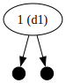
Adding the integer 1 creates a node whose two subtrees are both leaves. The
1 is the value stored in the node. The (d1) says that this node has depth
1, which should be obvious since a leaf has depth 0.

Adding the integer 5 creates a new node on the right subtree of the node
containing 1. No rebalancing is needed. Notice that the tree is not exactly
balanced (because the left subtree of the 1 node has depth 0 and the right
subtree has depth 1), but the depth difference is only 1, which is OK for an
AVL tree.
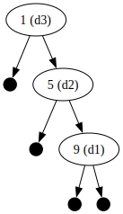
This image shows what happens when we naively add the number 9 to the tree.
It has to go to the right of the 1 node and the 5 node in order to maintain
the order invariant, but now the tree is unbalanced because the 1 node has a
left subtree of depth 0 and a right subtree of depth 2. We need to rebalance
the tree.
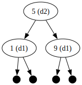
This is what happens after we have rebalanced the tree. We have taken the 5
node and "pulled it up" to the root of the tree, moving the 1 node to its
left subtree and keeping the 9 node as its right subtree. The old left
subtree of the 5 node (which is just a leaf) becomes the new right subtree of
the 1 node. Notice also that the 9 node doesn't change.
This kind of reshuffling is called a "tree rotation". There are two different kinds of rotations; this one is called a "left rotation". We'll describe rotations in detail below; right now we just want you to get a feel for what they do.
The kind of unbalanced tree that is balanced by a single left rotation is
called a "right-right case", which is the case here. "Right-right" means that,
starting from the first unbalanced node (the 1 node here), you go first to
the right (to the 5 node) and then again to the right (to the 9 node) to
get the nodes that participate in the rotation. (There are three other cases,
called "left-left", "left-right", and "right-left".)

Adding the number 4 doesn't make the tree unbalanced.

Adding the number 8 also doesn't make the tree unbalanced. Notice also that the order invariant is still maintained, because 8 is to the right of 5 but to the left of 9.
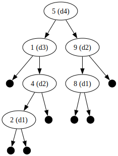
Adding the number 2 does make the tree unbalanced, so we need to do a rotation
on the first unbalanced node up from the 2 node, which is the 1 node (left
subtree: depth 0; right subtree; depth 2).
This kind of imbalance is called the "right-left case", since the imbalanced
nodes go down to the right from the 1 node (to get to the 4 node) and the
left to the 2 node. To rebalance it we need to do two rotations: a right
rotation around the 4 node and then a left rotation around the 1 node.
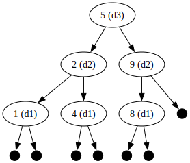
Here is what it looks like after the two rotations are complete. (Don't worry if you don't understand how this happened; we'll get into the details below.)
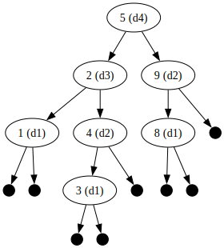
Adding the number 3 doesn't make the tree unbalanced.
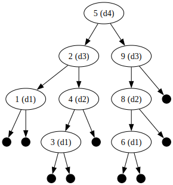
Adding the number 6 makes the tree unbalanced. We need to balance around the
9 node. This is an example of a "left-left case", since the unbalanced nodes
start at the 9 node and go left and then left again. A right rotation
balances it.
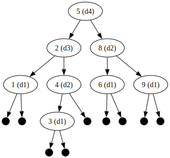
Now it's balanced.

Adding the number 7 doesn't unbalance the tree.

Neither does adding the number 10. That's all the insertions we're doing to do. We've seen all the cases except the "left-right" case which is a mirror image of the "right-left" case.
Tree rotations
In the examples given above, we've seen that there are a number of "rotations" that are done to balance a tree. In addition to balancing the tree, a rotation also has to preserve the order invariant. What kind of rotation you do depends on the way in which the tree is unbalanced. Each of the four cases requires a different rotation or rotations to balance the tree:
-
left-left case: a right rotation
-
left-right case: a left rotation on the left subtree and then a right rotation
-
right-left case: a right rotation on the right subtree and then a left rotation
-
right-right case: a left rotation
When you do these rotations in each case, the tree will become balanced and the order invariant will be preserved. (We aren't going to prove that; we have to leave something for CS 38!)
Here is what a left rotation looks like. Starting from this:
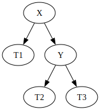
We go to this:
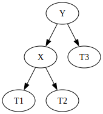
Notice that the Y node gets pulled up to the root of the tree, and the X node becomes its left child. The previous left child of the Y node (T2) becomes the right child of the X node. T1, T2, and T3 are arbitrary balanced trees.
Note
Before going further, you should convince yourself that this rotation preserves the order invariant.
A right rotation is the inverse of a left rotation. Starting from this:
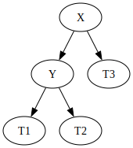
We go to this:
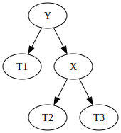
This rotation also preserves the order invariant.
That's all we have to say about rotations!
Inserting into an AVL tree
With rotations, it's fairly easy to implement insertions into a tree so as to keep the tree balanced. Here is an outline of the algorithm.
-
Insert the new value into the tree by following the branches based on the value to be inserted and the values at the nodes.
-
If the new value is smaller than the node value, insert it into the left subtree, if it's larger, insert it into the right subtree, and if it's the same, then the new value is already in the tree so do nothing.
-
Once you get to a leaf, replace it with a new node with the new value and two leaves as children.
This is the naive insertion algorithm. (We haven't balanced the tree yet.)
Of course, we want to do this functionally, so we aren't really replacing anything; we are buliding up a new tree as we go along out of the parts of the old tree. Therefore, the "replacement" step is to put in a new node with the new value in place of what was a leaf in the original tree; this new node has leaves for children.
Now that we have the new value in the tree, we need to make sure that the tree is balanced, and if not, we need to balance it. The new node we just created is obviously balanced (it has two leaves as children, both of which have depth 0), so we look at the parent of that node, and then the parent of that node, and so on until we reach an unbalanced node or until we reach the root of the tree. If we find an unbalanced node, we figure out which case it is (left-left, left-right, right-left, or right-right) and do the necessary rotations for that case, which balances the tree.
That completes our description of AVL trees. Now we have to implement this in OCaml!
OCaml implementation
Recall the definition of the tree type given above:
We will also find it useful to have a few helper functions. Here they are:
(* Depth of an AVL tree. *)
let depth = function
| Leaf -> 0
| Node (d, _, _, _) -> d
(* Extract the data value from a node. *)
let data = function
| Leaf -> failwith "no data"
| Node (_, v, _, _) -> v
(* Create a new node from two subtrees and a data value.
This assumes that the ordering invariant holds i.e.
that v is greater than any value in the left subtree
and is smaller than any value in the right subtree. *)
let make_node v l r =
let d = 1 + max (depth l) (depth r) in (* compute the correct depth *)
Node (d, v, l, r)
Note
Notice that this forms a partial abstraction layer for our tree representation. To complete the abstraction layer, we would need to have functions to get the left and right subtrees of a node, and also to test if a node is a leaf or not. We won't do this, because we want to be able to use the pattern-matching facilities of OCaml to make our code more concise.
Functions to write
Here are the functions we want you to write.
1. search [4 points]
Write a function called search that takes two arguments: an int and a
tree, and returns true if the int is present in the tree, or false
otherwise.
Note: The depth of the trees don't matter for this function.
2. left_rotate and right_rotate [16 points]
Write two functions called left_rotate and right_rotate that do left or
right rotations as described above. Note that not all trees can be left or
right-rotated; if you can't do the rotation use the failwith function to
signal an error along with the error message "can't left rotate" or "can't
right rotate".
Both of these functions can be written in four lines of code each (three if
you don't mind having long lines). You will want to use OCaml's
pattern-matching capabilities on Node constructors. Remember that
pattern-matches on recursive datatypes can be more than one level. For
instance, a pattern match on a Node constructor doesn't have to be just:
If left and/or right are also Nodes, you can put them right into the
pattern-match. For instance:
If the subtrees are not Nodes, the pattern won't match. Of course, you
don't have to do this sort of thing, but it can shorten the code you need to
write.
You should also use the make_node helper function to create new nodes from a
value and two subtrees; this guarantees that the depth field of the new nodes
are set correctly.
Note
Having an abstraction layer (calling make_node to make a node instead of just
using the Node constructor) is a real benefit in this case, because the
make_node constructor function can do more than the Node constructor itself
can.
When you convert the diagrams given above to the rotation code, make sure to notice which parts of the trees change and which parts don't. This can also shorten the code.
Examples
let t1 = Node (2, 35, Leaf, Node (1, 42, Leaf, Leaf));;
let t2 = Node (2, 35, Node (1, 42, Leaf, Leaf), Leaf);;
let t3 = Node (3, 21, Leaf, Node (2, 35, Leaf, Node (1, 42, Leaf, Leaf)));;
let t4 = Node (3, 21, Node (2, 35, Node (1, 42, Leaf, Leaf), Leaf), Leaf);;
# t1;;
- : tree = Node (2, 35, Leaf, Node (1, 42, Leaf, Leaf))
# left_rotate t1;;
- : tree = Node (2, 42, Node (1, 35, Leaf, Leaf), Leaf)
# right_rotate t1;;
Exception: Failure "can't right rotate".
# t2;;
- : tree = Node (2, 35, Node (1, 42, Leaf, Leaf), Leaf)
# right_rotate t2;;
- : tree = Node (2, 42, Leaf, Node (1, 35, Leaf, Leaf))
# left_rotate t2;;
Exception: Failure "can't left rotate".
(* Tree t3 is unbalanced on the right, so it needs a left rotation. *)
# t3;;
- : tree = Node (3, 21, Leaf, Node (2, 35, Leaf, Node (1, 42, Leaf, Leaf)))
(* t3 is not balanced. *)
# let t3' = left_rotate t3;;
val t3' : tree = Node (2, 35, Node (1, 21, Leaf, Leaf), Node (1, 42, Leaf, Leaf))
(* t3' is balanced. *)
(* Tree t4 is unbalanced on the left, so it needs a right rotation. *)
# t4;;
- : tree = Node (3, 21, Node (2, 35, Node (1, 42, Leaf, Leaf), Leaf), Leaf)
(* t4 is not balanced. *)
# let t4' = right_rotate t4;;
val t4' : tree = Node (2, 35, Node (1, 42, Leaf, Leaf), Node (1, 21, Leaf, Leaf))
(* t4' is balanced. *)
3. insert [20 points]
For this problem, you have to complete a partial implementation of insertion of
an int into an AVL tree. You don't have to start from scratch, because our
old friend Ben Bitfiddle spent a few hours trying unsuccessfully to implement
it himself. His friend Eva Lu Ator found him fast asleep on his desk, snoring
loudly. On his computer was the following code:
let rec insert v t =
match t with
| Leaf -> Node (1, v, Leaf, Leaf) (* base case *)
| Node (_, v', l, r) ->
begin
match () with
| _ when v < v' -> (* insert into left subtree *)
let l' = insert v l in (* new left subtree *)
if depth l' - depth r = 2 (* tree is now unbalanced *)
then
if v < data l'
then (* left-left case *)
(* new value v is in the left subtree of l';
need to make a new tree
and do a right rotation on it. *)
failwith "TODO"
else (* left-right case *)
(* new value v is in the right subtree of l';
need to do a left rotation on l',
make a new tree and do a right rotation on it. *)
failwith "TODO"
else
make_node v' l' r (* already balanced *)
| _ when v > v' -> (* insert into right subtree *)
failwith "TODO"
| _ -> t (* already in tree *)
end
Note
Notice that Ben is using the
idiom to get the effect of if/else if/else if/.../else inside a single
match expression.
Fortunately, Ben's comments made it clear what he still needed to do. Eva Lu
looked at the code for a while, and finally said: "This is all correct so far."
However, she didn't have time to finish the code herself, and Ben looks like he
won't be up for several more hours, so it's your job to finish the code by
removing the failwith "TODO" lines in insert and replacing them with the
correct code. (It's about 15 more lines of code in all.)
There are a few other things about this code that are worth highlighting.
Let's assume you are inserting a value into the left subtree of a tree. When
you recursively insert the value into the left subtree, you know that the
resulting tree will be balanced (assuming the insert function works
correctly!). You also know that, before you inserted the new value into the
left subtree, the depth of the left subtree was either equal to the depth of
the right subtree, or one more or one less than the right subtree's depth.
After inserting the new value, the new left subtree's depth is either the same
as it was before (in which case the tree is still balanced) or it is one
larger. If the left subtree originally had a depth one less than the right
subtree, or equal to the right subtree, adding a new value wouldn't unbalance
the tree. However, if the left subtree originally had a depth one more than
the right subtree, and if adding a new value to the left subtree made its depth
one larger, then the new left subtree would have a depth 2 greater than the
right subtree, which is unbalanced. That's why there is the line if depth l'
- depth r = 2 to check for an unbalanced tree; it's the only way the tree
could become unbalanced.
Also, here is a very subtle point. In this code:
| _ when v < v' -> (* insert into left subtree *)
let l' = insert v l in
if depth l' - depth r = 2
then
if v < data l' (* <---- NOTE *)
then
failwith "TODO"
else
failwith "TODO"
else
make_node v' l' r
in the location marked (* <---- NOTE *), v is either going to be less than
data l' (the then case) or greater than data l' (the else case).
Why couldn't it be equal to data l'?
There are only two ways for v (the new value to be added) to be the same
as data l' (the top-most value in the tree l'):
-
The value
vwas already in the left subtreel, soinsert v lis justl. In that case,depth l' - depth ris the same asdepth l - depth rbefore insertion, and that number can't be greater than 1 because it would have violated the AVL tree balance invariant. So this case doesn't come up at the location marked<---- NOTE. -
The left subtree
lis just aLeaf. That means that the depth of the left subtree could not have been one greater than the right subtree, because leaves have depth 0, so even after inserting the new value the conditiondepth l' - depth r = 2cannot be true. So this case also doesn't come up.
Sophisticated data structure code is hard! 
Testing
Use the test script to check if your code runs correctly. Here are some functions that might be useful to you when testing interactively:
(* Find the minimum value in an AVL tree. *)
let rec min_avl_tree = function
| Leaf -> None
| Node (_, v, l, _) ->
begin
match min_avl_tree l with
| None -> Some v
| Some l' -> Some l'
end
(* Find the maximum value in an AVL tree. *)
let rec max_avl_tree = function
| Leaf -> None
| Node (_, v, _, r) ->
begin
match max_avl_tree r with
| None -> Some v
| Some r' -> Some r'
end
(* Return true if a tree is a valid AVL tree. *)
let rec is_avl_tree = function
| Leaf -> true
| Node (d, v, l, r) ->
let dl = depth l in
let dr = depth r in
if is_avl_tree l
&& is_avl_tree r
&& d = 1 + max dl dr
&& abs (dl - dr) < 2
then (* check order invariant *)
match (max_avl_tree l, min_avl_tree r) with
| (None, None) -> true
| (None, Some rmin) -> v <= rmin
| (Some lmax, None) -> v >= lmax
| (Some lmax, Some rmin) -> v >= lmax && v <= rmin
else false
You don't need to use these in your submitted code, though.
Visualizing your trees
It's easiest to see what's going on in your code if you can visualize the trees generated by your code. We imagine that at this point, the one thought that is burning in your head is "how did they make those cool diagrams of the AVL trees?". Well, now we'll tell you so you can do the same to your own trees (nothing beats looking at pictures of data structures when debugging complex algorithms). First, start up a terminal and enter these commands (if you're running Linux or Windows with WSL):
or these commands (if you're running MacOS with Homebrew:
Once this is done, you will have installed the graphviz package, which
will include a very useful program called dot. dot is an interpreter for
a mini-language used to represent graphs. The details of this language aren't
important, but for instance, here's a "dot file" (a file ending in the extension
.dot) corresponding to the graph displayed above containing all the numbers
from 1 to 10:
digraph tree {
0[label="5 (d4)"]
0 -> 1
0 -> 10
1[label="2 (d3)"]
1 -> 2
1 -> 5
2[label="1 (d1)"]
2 -> 3
2 -> 4
3[shape="point",width=0.2]
4[shape="point",width=0.2]
5[label="4 (d2)"]
5 -> 6
5 -> 9
6[label="3 (d1)"]
6 -> 7
6 -> 8
7[shape="point",width=0.2]
8[shape="point",width=0.2]
9[shape="point",width=0.2]
10[label="8 (d3)"]
10 -> 11
10 -> 16
11[label="6 (d2)"]
11 -> 12
11 -> 13
12[shape="point",width=0.2]
13[label="7 (d1)"]
13 -> 14
13 -> 15
14[shape="point",width=0.2]
15[shape="point",width=0.2]
16[label="9 (d2)"]
16 -> 17
16 -> 18
17[shape="point",width=0.2]
18[label="10 (d1)"]
18 -> 19
18 -> 20
19[shape="point",width=0.2]
20[shape="point",width=0.2]
If you're curious about the dot language, you can check out this page. Now we'll show you how to generate these dot files from your OCaml AVL trees. Use these functions:
(* Convert a tree to a string in "dot" format. *)
let dot_string_of_tree t =
let sp = Printf.sprintf in
let rec aux t i =
match t with
| Leaf -> (sp " %d[shape=\"point\",width=0.2]\n" i, i + 1)
| Node (d, v, l, r) ->
let (ls, j) = aux l (i + 1) in
let (rs, k) = aux r j in
let curr =
sp " %d[label=\"%d (d%d)\"]\n" i v d ^
sp " %d -> %d\n" i (i + 1) ^
sp " %d -> %d\n" i j in
let body = curr ^ ls ^ rs in
(body, k)
in
let header = "digraph tree {\n" in
let (body, _) = aux t 0 in
header ^ body ^ "}\n"
(* Print a tree to a file in "dot" format. *)
let print_dotfile filename t =
let outfile = open_out (filename ^ ".dot") in
begin
Printf.fprintf outfile "%s" (dot_string_of_tree t);
close_out outfile
end
Then, if you have a tree called mytree and you want to save it to a file
in dot format, you can do this from inside OCaml:
and when you exit OCaml, you should see a file called mytree.dot in the
same directory you were in. To convert this to a PNG image for viewing, do this
in the terminal:
This should output a file called mytree.png. You can look at the file in a
web browser or in any program that can view images (e.g. Preview on a Mac).
If you do this, you should see a display of your tree in a nice graphical
format like what you've seen above.
We want to emphasize that you don't have to use dot if you don't want to;
you won't be marked on it, for instance. However, it's very useful for
debugging and it's very satisfying to see a data structure you created
represented graphically, so we encourage you to try it.